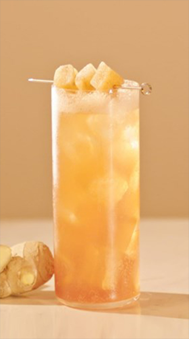

Advertisement Video
Johnnie Walker Core Range
- JOHNNIE WALKER RED LABEL
- Flowers that bloom into flames. Johnnie Walker Red Label is the world's best-selling Scotch Whisky. And is made for mixing, both in exhilarating cocktails and with your favorite people. It brings together whiskies specially chosen for their bold, vibrant flavors that add a fiery kick to any mix.
- JOHNNIE WALKER BLACK LABEL
- Johnnie Walker Black Label is one of life's true icons. A masterful blend of single malt and grain whiskies from across Scotland, aged for at least 12years. The result is a timeless classic with depth and balance of flavor. Drink it with ice, neat or in a Highball.
- JOHNNIE WALKER DOUBLE BLACK LABEL
- Johnnie Walker Double Black is the rebellious younger sibling of Johnnie Walker Black Label with a deep, brooding intensity. to It's a sibling of Johnnie Walker Black Label, but youthful, spikier and more rebellious.
- JOHNNIE WALKER GOLD LABEL
- Johnnie Walker Gold Label Reserve is a whisky that plays nicely with others but always holds its own. This award-winning Scotch is made from whiskies chosen for their sweet, honeyed qualities. We select them when they're at their most vibrant for vivid flavor in every mouthful.
- JOHNNIE WALKER GREEN LABEL
- Our only Scotch blended entirely with single malts. Johnnie Walker Green Label is a hidden gem with vibrant secrets to reveal. And with malts from the four corners of Scotland, aged for at least 15years, it captures the distinct flavors of each landscape in perfect balance. A whisky that's in harmony with narture.
- JOHNNIE WALKER BLUE LABEL
- Where velvety smooth flavors blossom on the tongue. Johnnie Walker Blue Label comes from hand-selecting rare Scotch Whiskies with a remarkable depth of flavor. Only one in 10,000 casks make the cut. Best served neat, along with an ice-cold water to enhance its powerful character.
WHISKY COCKTAILS

- JOHNNIE & GINGER
- The Highball drink is simply one part Johnnie, three parts mixer, fresh garnish and lots of ice. It's inviting and easy-going, an explosition of flavor you only get from the bold taste of Johnnie Walker paired with the sweet, floral, fruity of fiery. Time to start mixing.
WALK WITH US
We're here whenever you're ready to take the plunge with Johnnie Walker and discover cocktail recipes, new product launches and the latest from our world of whisky.
START JOURNEY